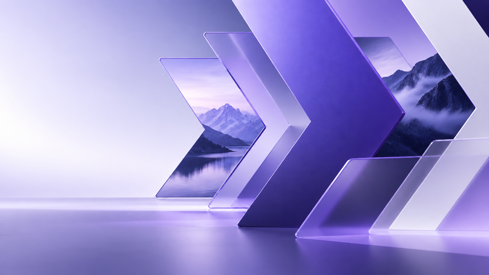

Base atual
- Conversas e ferramentas existentes
- Projetos e marcas
- Planos e créditos centralizados
- Entrada principal autenticada
Cadu · mapa de produtos · priorização de front-end
Leitura do que cada solução resolve hoje, do que entra no protótipo e do que precisa virar backlog nas próximas três semanas.
Setembro de 2026 · protótipo visual, sem mudanças de backend
Como as soluções se integram
Organização, marca e projeto são informações de sessão. Cada produto usa esse contexto e retorna um resultado específico para os demais.
Central operacional
Conversa, projetos, marcas, integrações e plano ficam próximos sem substituir ferramentas especializadas.

Produção criativa
O Studio recebe direção de marca e planejamento; devolve ativos, versões e aprovações ao projeto.
Operação de contas e dados
O Connect é o ambiente de conexões MCP, OAuth, importação de relatórios e normalização de campanhas e IDs.
Conhecimento aberto
Skills é pública: ensina a usar capacidades, fornece exemplos e leva a pessoa ao Workspace quando for necessário contexto autenticado.
Estratégia de mídia
O Planner começa pelo desafio de negócio e estrutura públicos, canais, orçamento, calendário e entregas para Studio e Connect.
Três semanas para o protótipo front-end
O objetivo não é construir integrações reais agora. É validar uma experiência coerente que permita às equipes entender onde cada tarefa acontece.
Fundação comum e leitura imediata de produto.
Entradas reconhecíveis, com contexto preservado.
Material para validação de direção.